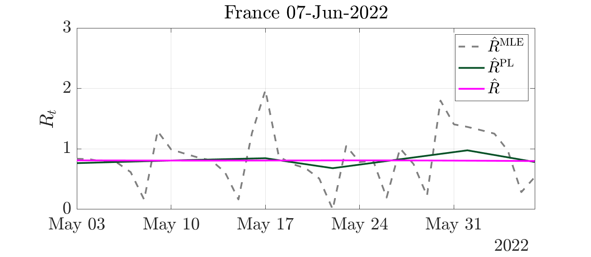
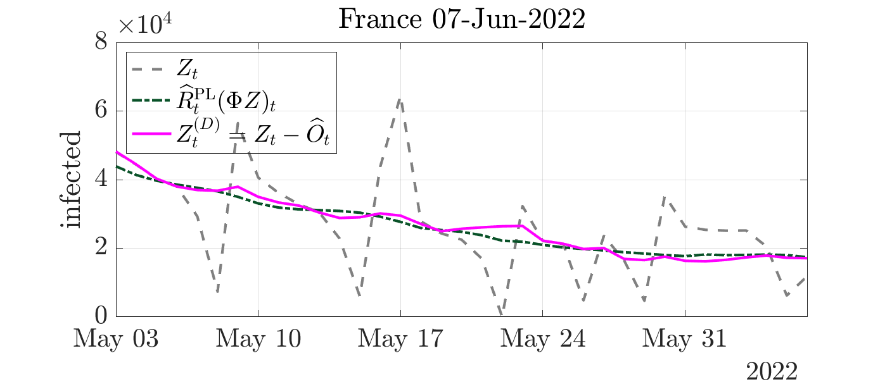
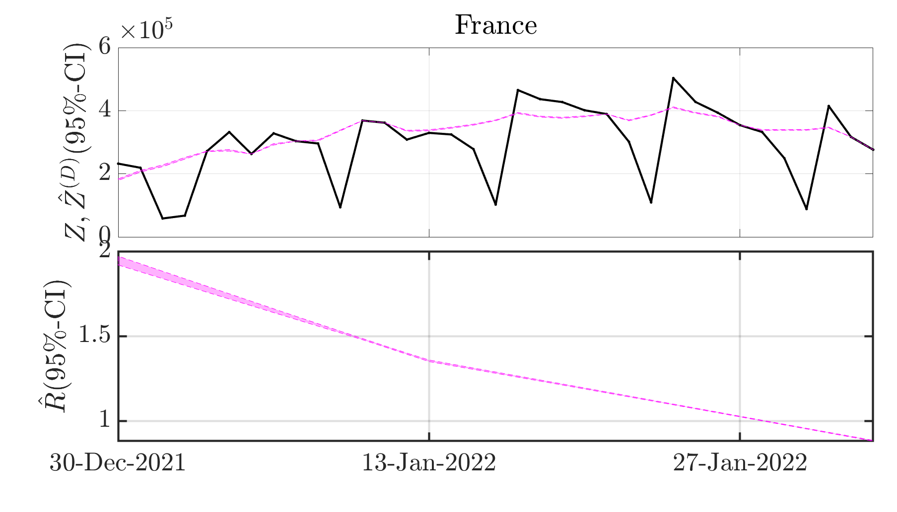
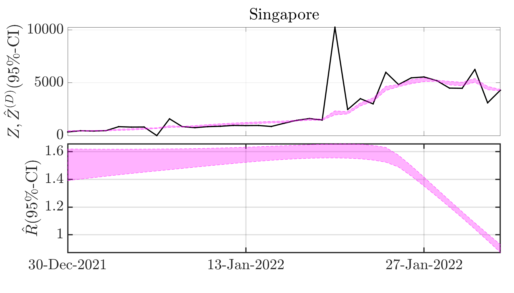
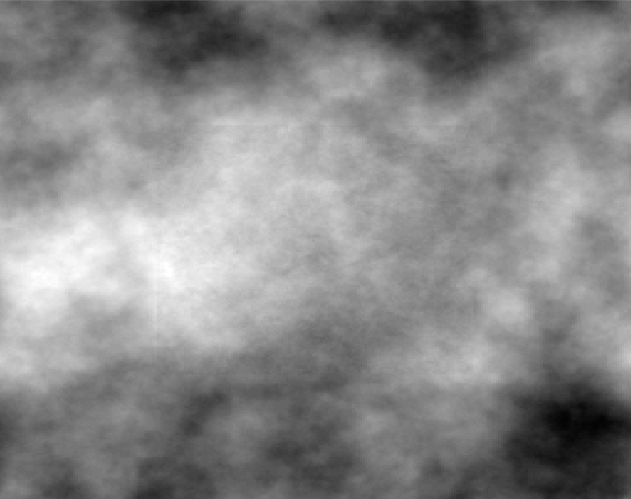

Loss of samples due to saturation of audio sensor

I am currently a CNRS Researcher LS2N in the team Signal IMage and Sound in Nantes. My research topics include inverse problems, variational methods, supervised learning, MCMC sampling and time-frequency analysis.
Here is a detailed curriculum vitae CV.
Research interests
Inverse problems in audio
NEW A master internship on Probabilistic Diffusion Models for audio inpainting supervised by Mathieu Lagrange and myself has opened at LS2N for Spring 2024. More details can be found in the offer. For applications please contact Mathieu Lagrange and I by email (see contact in the offer).
Available audio signals often have undergone different types of degradation, either during their acquisition, e.g., the recording of a piece of music on a physical medium, and/or during their transmission, e.g., in phone conversations. A very common yet severe degradation consists in missing samples, encompassing the case when samples have been distorted so much that they no longer contain relevant information.
E.g. in the figure below, the observed signal, plotted in dark green, is the typical output obtained from a saturating sensor: the values of the ground truth signal, plotted in light green, are cut when their amplitude is larger than a given threshold, inducing locally a total loss of information.
Audio inpainting consists in reconstructing missing samples with maximal possible accuracy.
Estimation of the reproduction number of the Covid-19 pandemic
NEW A two-years postdoc position in signal processing and Monte Carlo methods applied to epidemiology has opened in Nantes. More details can be found in the offer. For applications please contact Jérôme Idier, Sébastien Bourguignon and I by email (see contact in the offer).
The daily surveillance of the Covid-19 pandemic relies on the reproduction number R0, which accounts for the averaged number of secondary cases stemming from a primary infection. The precise, fast and robust estimation of this indicator is thus of utmost importance for National Health Authorities to design sanitary politics. Further context and mathematical details can be found in these slides providing an overall presentation of the entire project.
Maximum A Posteriori estimate via nonsmooth convex optimization
The major issue in the estimation of real-time reproduction number is the poor quality of Covid-19 data, which contains irrelevant or missing counts, pseudo-seasonalities due to day-offs, as illustrated on the black curve above.
In collaboration with P. Abry, N. Pustelnik, S. Roux, R. Gribonval and P. Flandrin we proposed to tackle this issue by designing an extended pandemic model, accounting for the presence of outliers in the infection counts. Then, the joint estimation of the reproduction number and the outliers is formulated as a convex nonsmooth optimization problem, balancing the fidelity to the extended epidemiological model and regularity and sparsity constraints. We designed an efficient minimization scheme yielding the resulting Maximum A Posteriori estimate of the reproduction number. Further, we proved the convergence of this algorithm, the dynamics of which you can observe on this video.
The developed estimation procedure is run on a daily basis on the data collected from the National Public Health Authorities of 200+ countries by the Johns Hopkins University, and made publicly available in a repository containing time series of new infection counts since the beginning of the pandemic.

MAP estimates of the reproduction number

Denoised infection counts
Credibility interval from Monte Carlo
Complementary to the point-in-time above estimates, health authorities also need guidance on how much confidence to place in the reproductive number estimate.
In collaboration with G. Fort, P. Abry and N. Pustelnik, we developed Monte Carlo sampling yielding credibility interval estimate of the reproduction number. To that aim, we design Markov chain Monte Carlo scheme, leveraging the Adjusted Langevin technology and adapting it to nonsmooth log-likehood.


Generalized time-frequency transforms and their zeros
Our journal preprint introducing a novel covariant transform tailored for discrete signals and designing detection methodology based on the zeros of the associated spectrogram has been published in IEEE Transactions on Signal Processing. It is available on hal and arXiv. The associated Python codes are available on GitHub.

Power of the signal detection test depending on the functional statistics
My postdoctoral project focuses on the construction of extended time-frequency transforms and the study of their zeros, participating to the ERC project Blackjack holded by Rémi Bardenet.
I am notably interested in the statistics of the random point process consisting of the zeros of the transform of white Gaussian noise, with the purpose to renew standard signal processing procedures classically based on spectrogram maxima by developing alternative zero-based methodologies. I am currently designing signal detection strategies leveraging the spatial statistics of the zeros of the new covariant transform we built.
To give theoretical ground to this work, I investigates the links between covariant representations and Gaussian Analytic Functions making use of an algebraic formulation of generalized time-frequency transforms emphasizing the action an underlying symmetry group. Further, I intend to benefits from a parallel with the quantum theory of coherent states in collaboration with Alexandre Feller.

Zeros of the spherical Gaussian Analytic Function

Spherical time-frequency transform in the presence of a signal
Fractal texture segmentation relying on convex nonsmooth optimization
I did my PhD thesis under the supervision of Patrice Abry and Nelly Pustelnik at Laboratoire de Physique in École Normale Supérieure de Lyon, France. I worked on texture segmentation based on fractal attributes, such as e.g. local regularity, designing convex functionals for simultaneous estimation and regularization of attributes maps. Further, I developed an automated data-driven Stein Unbiased Risk Estimate based strategy for the fine-tuning of hyperparameters.

Piecewise monofractal texture

Local estimate of local regularity

Denoised local regularity estimate